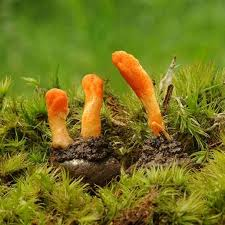
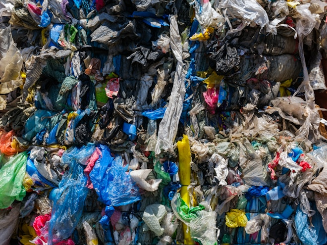
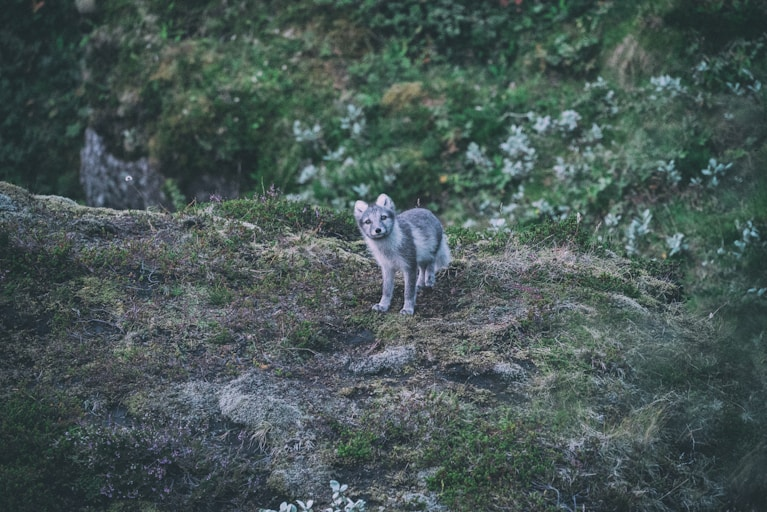
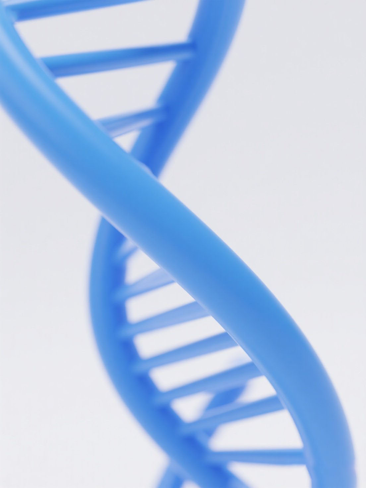
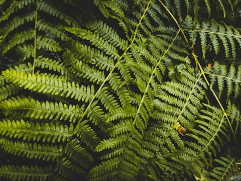
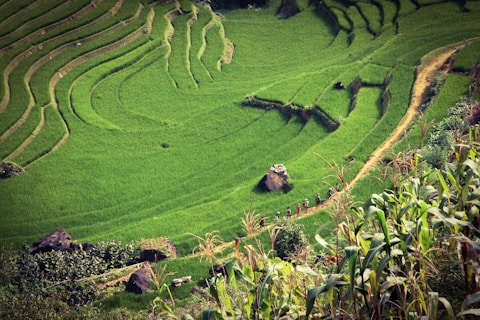
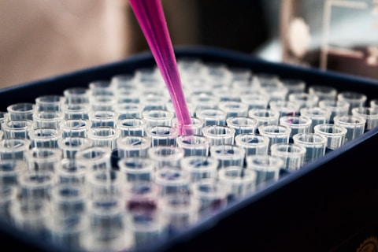
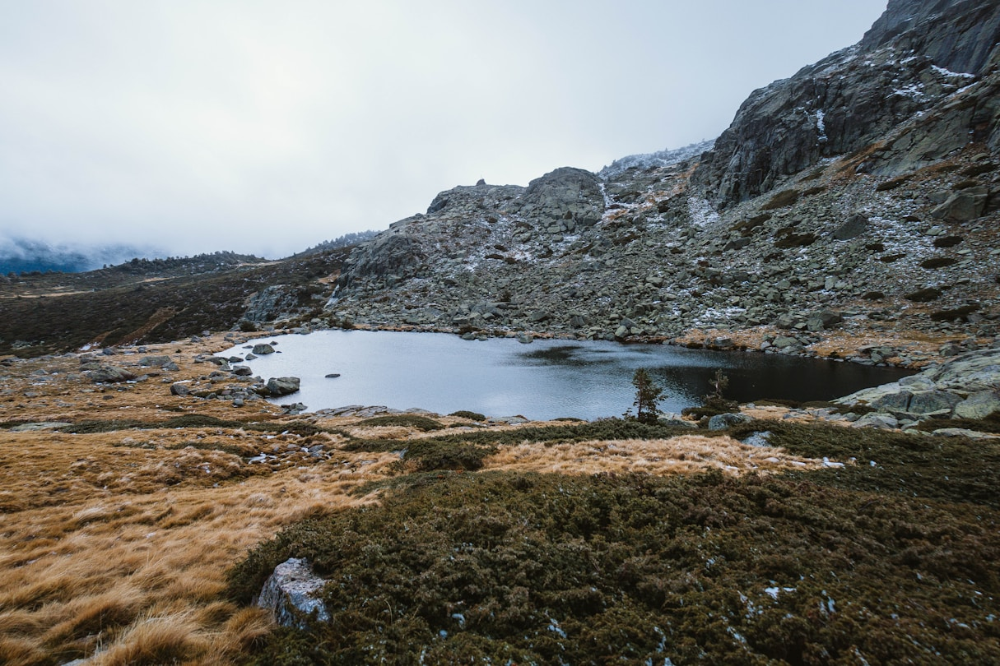
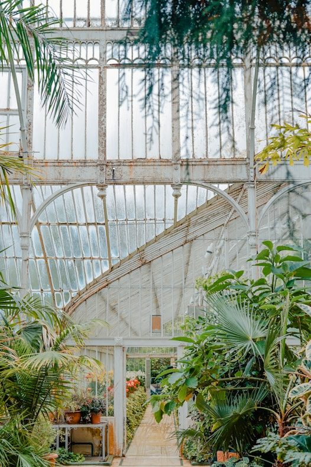
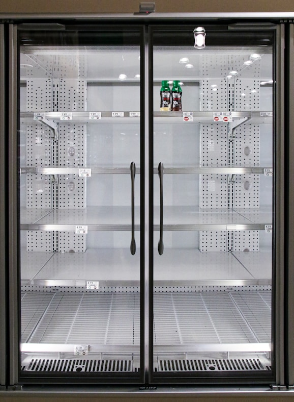

生态公益
- Eco-Charity
生态修复——在沙漠边缘，种下希望
Ecological Rehabilitation at the Desert Fringe: Planting for a Sustainable Future
当药香驱散风沙：我们的阿拉善故事
一道向东推进的“生命禁区”
数据化的严峻
根据水文气象资料分析，该区域的流动沙丘曾以每年平均3-5米的速度向东部农牧区和黄河推进。当地植被覆盖率一度不足3%，生态系统处于崩溃边缘。每年春季，这里发生的10级以上大风天气超过30天，扬起的沙尘不仅吞噬着本就稀少的草场，更对数百公里外的华北地区造成严重影响生存的困境
对于世代居住于此的牧民而言，这意味着家园的沦陷。我们记录下这样的影像：一位老牧民的房屋半边已被流沙掩埋，他指着远处说，“三十年前，那里还是水草丰美的草场。”这不仅是生态的退化，更是生存空间的持续挤压用智慧选择生命，用双手创造绿洲
面对严酷的自然，单纯的植树热情是远远不够的。我们的行动基于科学的规划与社区的深度参与
科学选种——“先锋”与“宿主”的共生智慧
我们的专家团队（由中科院的植物生态学家与本地林业工程师组成）经过多轮实地勘察和论证，最终确定了“以乔灌草相结合”的立体修复方案。先锋植物
选择了根系极其发达、号称“沙漠卫士”的梭梭树（Haloxylon ammodendron）。它的根系能深入地下数十米，有效固定流沙经济作物与共生模式
在梭梭树的根部，我们人工接种了被誉为“沙漠人参”的珍稀药材——肉苁蓉（Cistanche deserticola）。肉苁蓉是一种寄生植物，它必须依赖梭梭树的根系才能生长，同时其生长又能刺激梭梭树根系更加发达。这一模式，完美实现了生态效益与经济效益的捆绑。此外，我们还试验性地引种了耐旱的甘草（Licorice），其庞大的根状茎网络同样是优良的固土材料社区参与——从“受助者”到“守护者
我们深知，没有当地社区的参与，任何生态项目都无法持续。我们创立了“公司+ 合作社+ 农户”的模式：我们提供资金、技术培训和优质种苗；组织当地牧民成立种植合作社；并与他们签订了保底价收购协议。这确保了牧民的劳动能直接转化为稳定的经济收入，让他们从被动的生态难民，转变为这片新生绿洲最积极的建设者和守护者当绿色回归大地，当收获写在脸上
经过数年的不懈努力，阿拉善的这片试验区发生了脱胎换骨的变化
“以药养地”——生态的逆转
截至2024年底，项目区内的植被覆盖率已从不足3%提升至超过25%。 流动沙丘基本得到固定，形成了稳定的灌木-半灌木生态系统。 区域内风速明显降低，扬沙天气显著减少，一个肉眼可见的**“沙漠锁边林”**已经形成。“以地育药”——经济与品质的共赢
在这种接近原生态的逆境中生长出的肉苁蓉和甘草，经权威机构检测，其松果菊苷、麦角甾苷等有效成分含量比普通种植品高出15%-20%，品质极佳。 参与项目的牧民家庭，年人均收入平均增长了近2万元人民币，实现了稳定脱贫。曾经因生态恶化而废弃的土地，如今变成了能带来持续收益的“绿色银行”。为未来医学守护一个“诺亚方舟”
Preserving Genes, Protecting Tomorrow: A Noah's Ark for Medical Frontiers
紧迫——沉默的消逝
世界自然保护联盟
根据世界自然保护联盟（IUCN）红色名录及中国《国家重点保护野生植物名录》，超过百种传统药用植物正面临生存威胁
野生人参 | 冬虫夏草
野生人参
过去50年，野生种群数量下降超过80

冬虫夏草
适生海拔正以每十年8-10米的速度上升，栖息地不断萎缩核心原因

生境破坏

过度采挖
气候变化

一座活的“基因宝库”
“保护一个物种，就是守护一部未被完全解读的'药方'。”

“适应性”
野生基因的多样性= 应对未来病虫害和气候变化的“资本”

“育种改良”
野生基因为现有栽培品种的改良提供关键的“父本/母本”

“新药研发”
野生基因可能蕴含着人类尚未发现的全新生物活性化合物，是未来创新药物的直接来源建立“道地药材种质资源保护体系”
就地保护

与阿拉善等项目地合作，建立“原生境保护区”
利用红外相机、无人机等技术进行种群动态监测
迁地保护

1
种质资源圃
建立一个大型的、智能温控的“植物园”，引种栽培各类珍稀药材，用于科研和展示
2
种子库
与国家级种子资源库合作，将收集到的种子在零下20℃的低温条件下进行长期战略存储

3
离体库
针对无种子或种子难以保存的物种，与顶尖科研机构开展合作，利用植物组织培养和超低温（零下196℃液氮）保存技术，将其细胞、组织或胚状体进行永久保存
对项目有想法？欢迎加入
与我们联系，了解更多